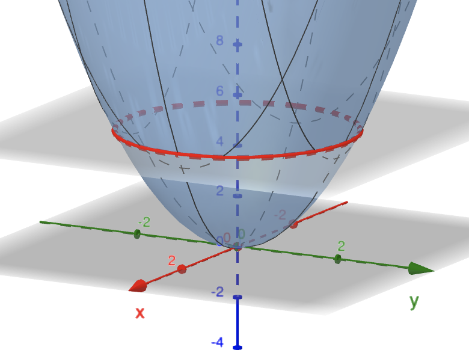

Revision
Chapters 2 & 3
Problem Solving Techniques
In 1945 George Polya published the book How To Solve It which quickly became his most prized publication. It sold over one million copies and has been translated into 17 languages.
In this book he identifies four basic principles of problem solving.
Problem Solving Techniques
- First Principle: Understand the problem
- Second Principle: Devise a plan
- Third Principle: Carry out the plan
- Fourth Principle: Look back
Source: How To Solve It, by George Polya, 2nd ed., Princeton University Press, 1957.
Chapter 2
Conics
- Parabolas: $y = ax^2 +bx+c = a(x-h)^2+k.$
- Circles: $(x-h)^2 + (y-k)^2 = r^2.$
- Ellipses: $\ds \frac{ \left( x-h\right)^2 }{a^2}+ \frac{ \left( y-k\right)^2 }{b^2}=1.$
- Hyperbolas: $\ds \frac{ \left( x-h\right)^2 }{a^2}- \frac{ \left( y-k\right)^2 }{b^2}=\pm1.$
Chapter 2
Contour diagrams
- A contour is a curve corresponding to the equation $z=f(x,y).$

Chapter 2
Cross-sections of a Surface
- A cross-section is the intersection of a surface with a vertical plane such as $y=C\,$ or $\,x=C.$
|  |  |
 |
Chapter 3
Limits and Continuity
Test for showing no limit exists
If $\begin{cases} f(x,y)\to L_1 & \text{as $(x,y) \to (a,b)$ along the path $C_1\in D$} \\[2mm] f(x,y)\to L_2 & \text{as $(x,y) \to (a,b)$ along the path $C_2\in D$} \end{cases}$
such that $L_1\neq L_2,$ then the limit $\ds{\lim_{(x,y) \to (a,b)}f(x,y)}$ does not exist.
Chapter 3
Limits and Continuity
Definition. Let $f:D\to\R$ be a function with domain $D,$ an open subset of $\R^2.$ Let $(a,b)\in D.$ Then $f(x,y)$ is continuous at $(a,b)$ if \[ \lim_{(x,y) \to (a,b)}f(x,y)=f(a,b), \]
i.e., the limit $(x,y)\to (a,b)$ of $f(x,y)$ exists and is equal to $f(a,b).$
If a function is continuous on all of $D$ we say simply that it is continuous on $D.$
Chapter 3
Partial Derivatives
$\ds\frac{\partial f}{\partial x}(a,b) = f_x(a,b) =\lim_{h \ra 0}\frac{f(a+h,b)-f(a,b)}{h} .$
$\ds\frac{\partial f}{\partial y}(a,b) = f_y(a,b) =\lim_{h \ra 0}\frac{f(a,b+h)-f(a,b)}{h} .$
Chapter 3
Partial Derivatives
The second order partial derivatives of $f$, if they exist, are written as \begin{align*} f_{xx} & = \frac{\partial^2f}{\partial x^2}, & \hspace{-1cm} f_{yx} & = \frac{\partial^2f}{\partial x\partial y}= \frac{\partial}{\partial x}\Bigl(\frac{\partial f}{\partial y}\Bigr), \\[3mm] f_{yy} & = \dfrac{\partial^2f}{\partial y^2}, & \hspace{-1cm} f_{xy} & = \dfrac{\partial^2f}{\partial y\partial x} = \frac{\partial}{\partial y}\Bigl(\frac{\partial f}{\partial x}\Bigr). \end{align*}
If $f_{xy}$ and $f_{yx}$ are both continuous, then $f_{xy} = f_{yx}$.
Chapter 3
Tangent Plane
In general, the equation of the tangent plane to a given surface $z=f(x,y)$ at $(a,b,f(a,b)),$ is
$ z=f(a,b)+f_x(a,b)(x-a)+f_y(a,b)(y-b), $
or, equivalently,
$ \qquad (x,y,z)= \bigl(a,b,f(a,b)\bigr) $
$ \qquad +\, \lambda\bigl(1,0,f_x(a,b)\bigr)+ \mu\bigl(0,1,f_y(a,b)\bigr), $
$ \text{with }\;\lambda,\mu\in\R. $
Chapter 3
Linear Approximations
The linear approximation to $f$ at $(a,b)$ is
$\ds f(x,y)\simeq f(a, b) + f_x(a,b)(x-a)+f_y(a,b)(y-b).$
We may use the equation for the tangent plane to infer that
$\Delta z \approx f_x(a,b)\Delta x + f_y(a,b)\Delta y,$
where $\Delta x =x-a$, $\Delta y =y-b$ and $\Delta z = z-f(a,b)$ represent a small change in $x, y$ and $z$ respectively. This is useful for estimating small changes in $z$ arising from small changes in $x$ and $y$.
Chapter 3
Gradients and Directional Derivatives
Directional derivatives:
$\ds f_{\u}(a,b)=\bigl(f_x(a,b),f_y(a,b)\bigr)\cdot\frac{\u}{\|\u\|}.$
Gradient vector:
$\ds \text{grad}\,f =\nabla f = (f_x,\,f_y) =f_x\, \i + f_y \,\j.$
A connection:
$\ds f_{\u}=\nabla f \cdot \frac{\u}{\|\u\|}.$
Chapter 3
The Chain Rule and Applications
Chain rule:
$\ds \dif{f}{t}=f_x\dif{x}{t}+f_y\dif{y}{t}$
Implicit differentiation:
$\ds \dif{y}{x}=-\frac{F_x}{F_y}.$
Credits
Design, Images & Applets
Juan Carlos Ponce Campuzano